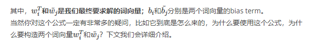
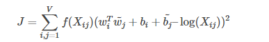
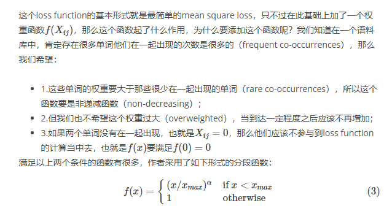
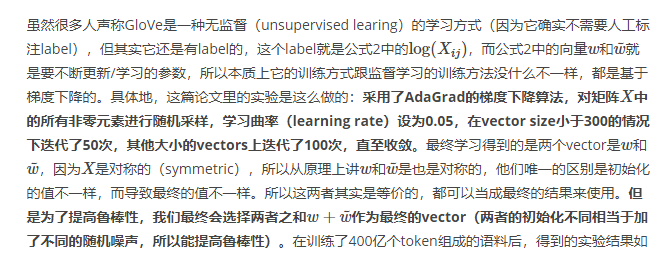
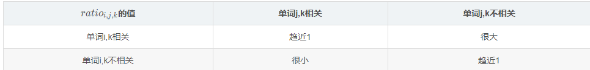
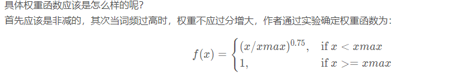

【NLP】GloVe(Global Vectors for Word Representation)
Algorithm
1.Construct A co-occurance matrix $X$ according to corpus
Commonly element $X_{i,j}$ in co-occurance matrix represent the time of word j appear in i’s context window.
Generally,it’s minimun unit is 1.
But GloVe don’t think so. It think the weight should decrease with distance.
提出了一个衰减函数（decreasing weighting）：
decay=1/d
用于计算权重构建词向量（Word Vector）和共现矩阵（Co-ocurrence Matrix）之间的近似关系，论文的作者提出以下的公式可以近似地表达两者之间的关系：

loss function

训练

解释
首先GloVe是基于共现矩阵(co-occurrance Matrix)的
于是第一步也是需要先计算共现矩阵$X$
$X_{i,j}$表示词j在词i窗口内出现的次数
$X_i=\sum_j^NX_{i,j}$表示共现矩阵的某行和。也就是在窗口内出现词的总数
那么
$P_{i,k}=\frac{X_{i,k}}{X_i}$表示条件概率。也就是词$k$在词$i$上下文出现的概率
作者发现对于两个条件概率的比例
$ratio_{i,j,k}=\frac{P_{i,k}}{P_{j,k}}$
有
于是我们想到用一个函数$g(v_i,v_j,v_k)$（参数为3个词向量），去拟合$ration_{i,j,k}$。这样就能训练出词向量了。
代价函数可以这么写
..但是会发现复杂度是$O(N^3)$.需要想办法降低复杂度
我们要考虑词向量$v_i$,$v_j$的关系。所以$(v_i-v_j)^T$应该是个不错的选择
然后ratio是个标量。$g$的计算结果应该也是标量。那么$(v_i-v_j)^Tv_k$应该不错
然后套层exp就是我们要的函数g了
至于为什么要加exp是为了化简。
我们的目标是让$\frac{P_{i,k}}{P_{j,k}}$和$g(v_i,v_j,v_k)$尽可能接近。
那么由上式有
那么有$P_{i,k}=exp(v_i^Tv_k)和P_{j,k}=exp(v_j^Tv_k)$
两边取对数就变成
那代价函数可以变成
现在复杂度降到$N^2$了。
但是数学上有点问题
因为我们知道$P_{i,j}$和$P_{j,i}$是不同的。。但是$v_i^Tv_j=v_j^Tv_i$
所以我们还需要修改一下。
因为$log P_{i,j}=log(X_{i,j})-log(X_i)=v_i^Tv_j$
把$X_i$化为两个偏差项$b_i,b_j$即可
于是就得到我们的最终损失函数
其中$f(X_{i,j})$是权重函数。出现频率越高的词权重应该越高
